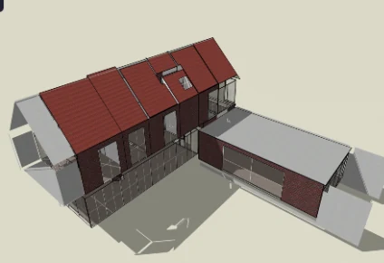

Glazing systems & building energy analysis
A simulation study comparing four window glazing configurations in the same residential building model.

Study design
I compared single clear, double clear, double Low-E and triple clear glazing while keeping the modeled building geometry, window layout, weather, schedules and HVAC settings consistent. The main comparison was between window solar heat gain and total cooling electricity demand.
The model used a 30% external window-to-wall ratio and a 24°C cooling setpoint.
Simulation results
Of the four cases, double Low-E glazing had the lowest modeled annual cooling electricity consumption.
| Glazing type | Cooling electricity (kWh) | Change vs. baseline |
|---|---|---|
| Single clear | 40,683.24 | Baseline |
| Double clear | 40,699.96 | 0.04% increase |
| Double Low-E | 39,396.43 | 3.16% saving |
| Triple clear | 40,258.15 | 1.04% saving |
Double clear glazing reduced window solar gain substantially but did not reduce whole-building cooling electricity. A lower solar gain does not automatically give the same percentage of electricity saving.
Scope
These are simulation results for the selected building model and operating conditions. They are not field measurements, and the study does not establish which glazing is best for every building or climate.